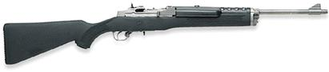
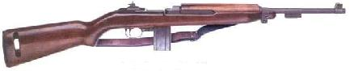
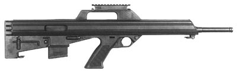
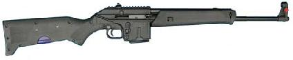
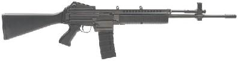
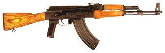
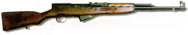
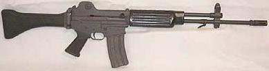
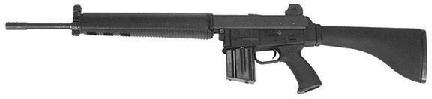
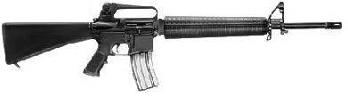

|
My past article on battle rifles was quite well received here on Doing Freedom!, so when thinking about what you folks are most interested in, I figured that a companion piece on battle carbines might be popular. There is probably more commercial interest in battle carbines than battle rifles in the US, so I think an introductory article on them might be of use to persons entering the market. I have some biases against battle carbines, but I will make them very clear in a moment, and then lock them away and write with an open mind (or as close to it as I can come). So with all that being said, let us continue onward.
What is a ‘battle carbine’?
The term ‘carbine’ originated a few hundred years ago with the advent of horse-mounted riflemen. At that time, a carbine was simply a standard infantry rifle cut down to a shorter length in order to be easily carried and fired from horseback. Mounted cavalry fell out of general use at the beginning of the last century, and the term lingered on being used to refer to any short rifle. Recently, I have seen many serious shooters use the terms carbine and rifle to distinguish between calibers, and I think this is a valuable and insightful change. Military long arms can generally be divided by caliber into full-power (.308, .30-06, .303 British, and so on) and intermediate power (.223, 7.62x39, and 5.45x39). The more powerful weapons are known as battle rifles, while the weaker ones are battle carbines.
Why the military uses battle carbines
There are certainly some such advantages. It is, however, insightful to keep in mind that it was national military forces that were responsible for reducing the power of common combat shoulder weapons. For them, the most significant advantage of a lighter-powered cartridge is that it makes a rifle significantly easier to control when firing in full automatic mode. The light fully automatic rifle fits quite well into modern military doctrine, where the individual soldier is backed up by a smorgasbord of heavy machine guns, armored vehicles, mortars, guided missiles, heavy artillery, close air support, and an entire nation’s ammunition manufacturing capacity. A typical modern soldier does not have the training or field need for a full-fledged battle rifle (and I would hypothesize that few national soldiers in the history of rifle-equipped armies ever have).
We mere citizens are in a different situation. In a fight, our rifles almost always going to be the biggest, baddest piece of weaponry we can call upon – so we need all we can get from them. In my opinion, battle carbines are not ideal weapons for the average independent individual. Compared to battle rifles, they are unnecessarily under-powered and short-ranged, and are outperformed by rifles in nearly all circumstances. However, it’s pretty obvious that a lot of people don’t share my objections to carbines, because there’s a quite large market for them. So if I haven’t deterred you from wanting one, read on, and we can at least help you choose the best poodle-shooter for your money. <grin>
The intended use of a battle carbine is to engage multiple targets out to about three hundred yards. Longer shots can be made, but they stretch the terminal potential of the cartridges awfully thin. Particularly in light of their intermediate cartridge, these weapons must be magazine-fed and semi-automatic in order to be practical. Military forces universally issue full-auto variants of these weapons to troops (not an option for us, but important to remember). That pretty well sums up the rifles we’ll be looking at here – magazine-fed weapons chambered for the .223 Winchester (aka 5.56x45mm), 7.62x39mm (aka .30 Russian Short), or 5.45x39mm (a comparatively recent Russian cartridge intended to emulate the Western .223 round). For a
more detailed look at the attributes of a good carbine, take a look at the beginning of my previous article on battle rifles – they are the same as the attributes of a good rifle.
Some thoughts on cartridges
The most ubiquitous battle carbine cartridge, the .223 Remington, has some attributes worth
mentioning. It’s pretty obvious that a bullet only .22" in diameter will make small wounds, so the .223 was designed to fragment on impact (it does so with out being a hollowpoint, so as to comply with the Hague convention rules of war). However, this can only happen reliably when the bullet is travelling faster than about 2800 feet/second. This equates to within about 150 yards from a 20" barrel, and with about 75 yards from a 16" barrel. Beyond this range, it will generally just make a .22 inch hole in what it hits – which isn’t too effective at incapacitating humans without being repeated several times.
There is also some heavier (62grain) semi-armor-piercing ammunition on the market. This chow is better at retaining energy over long distances and at perforating metal, but is still quite weak when compared to other rifle cartridges.
The Russian 5.45x39mm cartridge was developed in the 70s to duplicate the effects of the .223 while also remaining within Hague convention guidelines. It does this by having a hollow cavity inside the front of the bullet, which moves the center of gravity towards the bullet’s rear. This still allows stable flight, but when the bullet enters something solid, it begins tumbling, creating a large wound cavity. The advantage of this idea is that it remains effective at all velocities; the detrimental aspect of it is that the cavity is difficult to make identically in each bullet. Slight imperfections can degrade the accuracy of the bullets to 4 or 5 MOA, even if the rifle itself is very accurate.
The reject pile
Before we get to the potential choices, let me let you know right up front that there are a number of eligible carbines (many of them quite good guns) that I won’t bother to look at. These are the Steyr AUG, Sig 550, FA-MAS, H&K G36, FN-FNC, Beretta AR-70, and H&K 93. These guns are rare at best, and they various assault weapon legislative acts place them out of the price range of most of us. Worse, their magazines and spare parts are equally rare and expensive. It’s fun to fantasize about these neat-o obscure guns (and certainly good to make practical efforts to get them to be commonly available), but for the time being they simply aren’t realistic options for us.
I expect you’re ready to get to the point and see some rifles– so let’s begin. I’ll start with the poorer carbines, and then move on to the better ones.
Ruger Mini-14

Description: The Mini-14 is basically a scaled-down copy of the M1 Garand operating system chambered for .223 and using box magazines. A less common variant, the Mini-30, was made chambered for 7.62x39mm. For a while these guns were among the very few alternatives to the AR-15 in the battle carbine field, but those days are long gone (thankfully).
The Good:
- Size. The Mini is short, light, and handy to carry about.
- Ease of use. The Mini has good handling characteristics and is comfortable to use.
The Bad:
- Accuracy. While I know some Mini owners who can get very nice groups from their rifles, most shoot 3 or 4 MOA, or even more.
- Sights. The sights are fragile and of mediocre design. Don’t bump the rear sight, or you might break it. The front sight is more robust, but not protected and not particularly suited to good shooting.
- Mags. This is perhaps the most damning part of the Mini system. It is difficult to find quality mags for the Mini that hold more than 5 or 10 rounds. Bill Ruger never had much interest in selling mere mortals full-cap mags, so most of the ones out there are cheesy aftermarket things that are great for practicing malfunction drills, but lousy for anything else.
- Cost. At $400 and up, the Minis simply don’t offer nearly as much gun for the money as virtually any of their competitors.
Final Comments: The Mini is a civilian sporting rifle that really isn’t well suited for anything more strenuous. It can be pressed into service as a combat weapon, but won’t ever excel in such a role. If you are tight on cash and looking for a carbine, don’t even bother with a Mini – the Soviet Bloc guns we’ll get to in a minute are both cheaper and better. If you have a Mini already and it works well for you, then go with it. But I see no particular reason to choose one over the alternatives.
M1 Carbine

Description: The 'War Baby,' as it is sometimes called, was developed by the US military during World War II (interestingly, the original design was created by a convict in a prison workshop - but that's another story). The Army was looking for a weapon for support troops who might encounter enemy forces, but didn’t want to be encumbered with huge rifles. What was needed was something lighter than a Garand, but more powerful than the M1911 pistol. The answer was found in a light semiauto carbine chambered for a new .30 Carbine cartridge. This round is a straight-walled .30 case that produces about 1000 foot-pounds of energy (compared to 400-500 in most pistol cartridges and about 2500 in the .308). The weapon uses 15- and 30-round box magazines, and because popular with front-line troops (particularly in the Pacific theater) for its light weight and great handling. Both original military carbines and post-war commercially manufactured ones are available.
The Good:
- Good controls. The safety and magazine release are well designed, and the gun is easy to operate.
- Handling. Weighing in at only about 5.5 pounds and having a short overall length, the M1 carbine is a very handy weapon. Additionally, persons sensitive to recoil will really appreciate its gentleness.
- Sights. Like virtually all World War II American weapons, the M1 has very good sights.
The Bad:
- Accuracy. These carbines, particularly the military ones, have poorer accuracy than most other weapons we’ll be looking at. This is a bit of a moot point, as their range is more limited than the other guns we’ll consider.
- Range. Of the cartridges under consideration, the .30 Carbine is definitely the weakest. It’s really not much good past 50 or 75 yards.
- Ammo scarcity. Besides a few uncommon revolvers and single-shot pistols, the M1 Carbine is the only firearm that uses the .30 Carbine cartridge. As a result, ammo isn’t nearly as common as it is for any of the other guns we'll be looking at.
Final Comments: The M1 is a very good gun hampered by a pretty poor cartridge. It does have a lot nostalgic, Americana-type value associated with it, but it’s not the best combat piece out there for most situations. It would be most at home in a city or jungle environment. If you don’t plan to fight exclusively, you’d probably be wise to look for a more capable gun. One last thing – some of the military ones are equipped with folding wire-frame stocks made for paratroopers. Avoid the things. They may look cool, but you’ll have a hell of a time getting a decent cheek weld on one, and practical accuracy suffers greatly as a result.
Bushmaster M-17

Description: The M17 is unusual in being a bullpup – it is built with the magazine and action located behind the trigger. The result of this is the potential for having a short weapon (30") with a surprisingly long barrel (21.5"). To put that in context, consider that an AR-15 with a 20" barrel has an overall length of 39". These weapons have never become very popular, probably because there are a number of flaws in its design.
The Good:
- Size. Short rifles are easier to move around than long ones, both for transporting and for carrying.
- Mag compatibility. The M17 uses standard AR-15/M-16 magazines, which are readily available.
- Action. The M17 uses a very clean AR-18-type system that keeps gunk and gases out of the receiver. It is generally quite reliable.
The Bad:
- If you’re left-handed, forget it. One corollary of being a bullpup is that the ejection port is back behind the trigger. Firing right-handed, cases are thrown nicely away from you. Firing left-handed, they get pitched into your neck at high speed. There’s no way to reverse the port.
- Trigger. The M17’s trigger pull is long and gooey and generally bad. Yech.
- Heat. The only front grip on the gun is the (aluminum) receiver itself, and there is no insulation between it and the barrel. You don’t have to shoot many rounds before the front is too hot to hold comfortably.
- Controls. Due to the bullpup design, the magazine release and bolt hold-open are both located towards the rear of the buttstock, making fast and smooth mag changes and malfunction drills difficult. This
can be made up for in large part with lots of extra practice, but it’s something to keep in mind.
- Sights. A scope of some sort is an absolute must for the M17. See that carry handle on the top of the receiver? The front and rear iron sights are both mounted inside that. Most of my pistols have longer sight radii! Worse still, the M17 iron sights aren’t adjustable at all.
Final Comments: Taken individually, none of the M17’s shortcomings make it a really bad choice. But taken together, they leave no reason to buy the M17. If you absolutely must have one, I suggest you take a look at the modifications made to one by the late Mark Penman. If you desperately want a bullpup of some sort, take a look at K-Var’s AKU-94; a conversion kit to make an AK into a bullpup. I haven’t used one (and have heard mixed reports on their quality), but they are certainly worth looking into.
Kel-Tec SU-16

Description: The SU-16 (Sport Utility rifle) is a new design that will be coming onto the market probably by the end of this year. Let me say right now that I have neither handled nor fired one, so what I know about them comes from the info Kel-Tec has published. Still, we can get a decent idea of what the rifle will be like from that info. It had a number of neat features, including an integral bipod and the capability to store a magazine in its stock (both very similar to features of the Steyr Scout). The SU-16 will also be able to easily fold in half for transportation and storage (much like Kel-Tec’s other long gun design, the Sub-2000/Sub-9). It is chambered for the .223 cartridge, and uses standard AR-15/M-16 magazines.
The Good:
- Handling. At only 5 pounds unloaded, the Su-16 weighs what a .223 should weigh. This is primarily due to extensive use of polymer components. All accounts say that the SU-16 handles rather like an M1 Carbine, which is encouraging.
- Action. The SU-16 uses a gas piston system, which should be clean and reliable, if done right.
- Mag compatibility. Like I said above, they use the ubiquitous M-16 magazines, so good mags won’t be difficult to get. The ability to store a mag in the stock is a neat feature as well.
The Bad:
- Durability. Polymers can be very strong, but I’m skeptical about the ruggedness of a couple pieces, particularly the sights and bipod legs.
- Trigger pull. I’m assuming it will be mushy and mediocre until I see otherwise.
Final Comments: Unfortunately, the lack of available information on the SU-16 makes it impossible to draw any definite conclusions yet. Several important questions will only be answered after consumers have gotten a hold of the guns. Will they be workhorses like the AK family, or delicate civilian guns like the Mini-14? We just don’t know. Kel-Tec’s description of the rifle can be found at here. A few people are slowly starting to get SU-16s, so hopefully we will be seeing some extensive tests and field reports on them before too long.
Robinson Arms M-96

Description: The M96 is a new-manufacture rifle from Robinson Arms in Utah. The weapon is based on the Vietnam-era Stoner 63, but has been improved in several ways. It has a quick-change barrel that can be removed in literally seconds. While this is a great thing for potential military full-auto M96s, I don’t think it’s all that useful for you and I. The M96 can be had chambered for eithe
The Good:
- Action. Let’s hear it for another piston-operated carbine! It is a clean and reliable system.
- Trigger & sights. Not outstanding, but quite good on both counts.
- Accuracy. It’s usually quite good – 1.5 MOA or thereabouts.
- Mag compatibility. Again, common mags are a good thing.
The Bad:
- Weight. The original full size version of the M96 weights upwards of 9 pounds! The newer versions (specifically the Recon Carbine) are down to just less than 8 pounds. Still, that’s a lot for a .223.
- Execution. The M96 looks very good in concept, and should be good in practice as well.
Unfortunately, there seem to be some “issues” at the factory, because for some time there were some obvious production goofs being reported. Among other things, reported problems included internal parts breakage, barrels launching themselves out of the gun upon firing, out-of-spec magazine wells, and occasional terrible accuracy. It seems like most of these problems have been fixed (and some growing pains are reasonably expected from a new manufacturer), but the M96 is by no means a mature design yet. They have been improving it since it came out, and will probably continue to do so for some time. I’m not sure I would buy one just yet.
- Price. MSRP ranges from $1600 to $1900, depending on which type of M96 you want. For that kind of money, one could get into some of the rarities I said I would skip over, or you could get a different rifle that is just as good, and have a pile of cash left over for things like mags, ammo, and training.
Final Comments: The M96 is a new design that, like all new designs, has to go through a process of refinement before it really shows its true potential. It is a darn good piece now, but will almost certainly get better in the future. My suggestion would be to compare its handling with some of the other good carbine choices. If you like it and can afford, then go for it.
AK-47

Description: The AK-47 was designed during World War II by Mikhail Kalashnikov, and officially adopted in
1949. Since then, more AKs and AK copies have been manufactured than any other firearm in history (and
by a wide margin). The ones available in the US are primarily from Russia, China, Romania, Egypt,
Hungary, and Bulgaria, though many other countries have manufactured them as well. The AK is an excellent
weapon for a conscript army – cheap to make and simple to use - and it has served that function with distinction across the world since it was first designed. Magazines for AKs are available in 10-, 20-, 30-, and 40-round capacities, and there are some good (and comparatively cheap) 75-round drums around to boot.
The Good:
- Reliability. AKs are used as a benchmark against which the reliability of other rifles is rated. Their simple design, wide clearances, and robust operating system allow them to continue shooting when other weapons would have locked up solid.
- Durability. There’s not much vulnerable to breakage on an AK. You can bang them around a lot without hurting anything. The same thing goes for magazines – they can take all sorts of abuse without malfunctioning.
- Cost. What makes up for many of the AK’s shortcomings is the fact that they can be found as cheap as $250, magazines can be easily found for $8 each or less, and ammo costs between 8 and 10 cents per round.
The Bad:
- Hold-open. The AK has no bolt hold-open, so you won’t know when you’re out of ammo until you pull the trigger and get a click. This oversight also makes it difficult to clear a malfunction in an AK, should one occur. The problem can be partially solved by getting an aftermarket safety with a manual hold-open cut in it.
- The safety is also of mediocre design – it’s stiff and noisy to move, and impossible to manipulate from a firing grip. This can also be partially solved with a replacement safety that can be operated with the thumb from a firing grip.
- Trigger. The trigger pull on AKs is generally poor, and many of the ones I’ve used suffer from 'trigger slap,' a situation where the force of the bolt cycling jerks the trigger forward after each shot. The end result is a sore trigger finger, and it can be unpleasant to have to deal with. Again, both of these problems can be solved with a replacement trigger group.
- Sights. The AK uses a blade-and-notch sight system that isn’t particularly fast or precise. This can be fixed (didn’t see that coming, did ya?) with a replacement Mojo aperture sight from Red Star Arms.
- Accuracy. AKs aren’t noted for being particularly accurate guns. Expect 4-5 inch groups at 100 yards from one. Furthermore, the poor overall ergonomics of the gun work against the shooter to make accurate shooter a challenge.
Final Comments: The AK is doubtlessly the most proven combat rifle still in widespread use today. Its downfalls are primarily issues of comfort and user-friendliness. Crude but effective – pretty much what one would expect from old Russian technology. If you can’t afford anything better, an AK will make a good battle carbine. They can be had in 7.62x39, 5.45c39, or .223 caliber. Of these, the 7.62 is the cheapest, the 5.45 is the rarest, and the .223 is the most effective (and the easiest to get good ammo for). I would pass on the 5.45, but it’s really a toss-up between the other two. If you can afford higher ammo costs, the .223 offers better ammo and interchangeability with many other common carbines.
The best quality AKs available are the Russian Vepr and the Arsenal Bulgaria guns. The Vepr offers better accuracy, but is also heavier (for discussion of the .308 Winchester Vepr, see my battle rifles article). After that, the Hungarian and Romanian guns are perfectly serviceable. The worst of the bunch are the Egyptian Maadis – don’t get one of them unless you really don’t have another choice. If at all possible, get one with a pistol grip – 95% of the thumbhole stocks I’ve seen on AKs are atrocious.
SKS

Description: The SKS was designed in Russia in the 1940s along with the then-new 7.62x39mm cartridge. It saw action first in the late days of World War II, and was also used in the Korean War and Vietnam. Like the AK, the SKS was manufactured and adopted by a great many Soviet Bloc nations, including Russia, Chine, Armenia, Yugoslavia, Korea, East Germany, and Egypt, to name a few. SKSs generally have a 20” barrel, and feed from a non-detachable 10-round magazine.
The Good:
- Reliability. The SKS is almost as dependable as the vaunted AK.
- Cost. The SKS is by far the cheapest battle carbine available. Finding one for $100-$150 shouldn’t be a problem if you look around, and $200 will get one quickly.
- Bayonet. Many of the SKSs on the market have folding bayonets attached below the barrel. How useful they are is debatable, but it is a neat thing to have.
- Accessories. The only battle carbine with more available accessories and available doohickies is the AR-15.
The Bad:
- Sights. Like the AK, the SKS uses a forward-mounted notch sight. This makes for a short sight radius, and slow imprecise shooting.
- Trigger. Yuck. The pull is long and mushy.
- Limited mag capacity. The 10-round fixed mag that is standard on SKSs must be reloaded with stripper clips, which is slow even with practice. There are a couple alternatives, though. Aftermarket larger capacity fixed magazines are available that replace the 10-rounder. Installing a 20-round mag would be a useful improvement (there are 30-round fixed mags available, but the tend not to work very well). Also, there are some paratroop SKSs out there that have a 16” barrel and use AK-47 magazines. One of those guns would be a big improvement (and probably a better choice than an AK).
- Handling. The SKS is long (40" overall) and heavy (8.5 to 9 pounds, depending on variety), making it fairly clumsy and cumbersome to use. Still, many people find it more comfortable to use than an AK.
Final Comments: The SKS has become a popular rifle primarily because of its easy affordability. While it certainly makes a great gun to leave in your car or truck for emergencies, don’t assume that its quality is proportional to its popularity. The SKS is simple, reliable and rugged, but little more (it’s designed to outfit huge armies of conscripted peasants, remember?). If you can afford something better, don’t hesitate to get something better - you won't regret it.
Daewoo K2 / DR-200

Description: The Daewoo conglomerate in South Korea manufactures a wide range of products, including the
K2 (also known as the AR-100) battle carbine, which is the standard-issue weapon for the South Korean
military. It is a hybrid design, utilizing a close copy of an AR-15 lower receiver and an AK-47-type gas
pistol operating system. Only a small number of these guns were imported before the “assault weapons” ban, and a few
more were given thumbhole stocks and imported after the ban (under the name DR-200 or DR-300). Some
of the postban guns (the DR-300s) are chambered for 7.62x39mm, while the majority (the DR-200s) use .223
Remington.
The Good:
- Reliability. Thanks to its excellent gas piston system, the Daewoo is one of the most reliable carbines on the market.
- Trigger. The Daewoos generally have very good triggers out of the box. This is partly thanks to their AR-15 heritage.
- Sights. Daewoos have a well-protected range-adjustable aperture sight. Excellent!
- Mag compatibility. The .223 Daewoos use standard AR-15 magazines. The 7.62 ones, however, use a
rare, tempermental, and goofy-looking magazine (it is straight on top to fit in an AR-type magazine well, and curved on
the bottom to hold the tapered 7.62mm cartridges).
- Ergonomics. The Daewoo’s controls are virtually identical to the AR-15’s, which are excellent. Everything is within positioned to be the most useful to the shooter, and as a result mag changes and malfunction clearances can be made quickly and smoothly.
The Bad:
- Parts. Daewoos are rugged rifles and rarely suffer any parts breakage – but when they do, parts are virtually impossible to find. The only internal parts I’ve ever seen for sale are firing pins, and those had to be custom-made by a machinist for a group of Daewoo owners. The best solution (and it’s an expensive one) is to just buy a spare postban rifle, and thus get a full set of internal parts.
- Left-handedness. Like the AK-47, the bolt handle of the Daewoo is located on the right side of the receiver. This is a cool boon for lefthanders, but it is an annoyance for righties.
Final Comments: Now we’re getting to some better carbines! The Daewoo is an excellent weapon, the equal of any other available battle carbine in my opinion (having North Korea as a neighbor must be great motivation to design a good combat weapon). The one thing that holds it back is the lack of parts availability. If you are willing to purchase a second gun for parts, it will serve with distinction. Hopefully, someone will start making parts for these top-notch carbines soon. At any rate, if you get one, a pre-ban is the best choice, followed closely by a postban with an American parts kit and Ace fixed stock – the thumbhole stocks the
postbans were imported with are awful. I would avoid the 7.62x39mm DR-300 version completely – the magazines are hard to find, and of mediocre quality even then.
AR-180B

Description: The AR-18/AR-180 was originally developed in the 1960s to compete with the M16 for US
military contracts, and uses the same .223 cartridge as the AR-15. It failed to gain much popularity either
with the military or the civilian shooting community, but not for lack of quality. The gun proved itself in
Army trials and saw some combat service around the world, but was never made in large numbers. Armalite
has recently reintroduced it with a number of improvements, as the AR-180B. A few are now available, and
range in price from $500 to $750. Once production comes up to speed, prices should stabilize in the $500-
$600 range. These carbines have a 19.8” barrel and are all equipped with a muzzle break to reduce recoil
(not that a .223 really needs much recoil reduction). I have not yet had the chance to fire one, but several
knowledgable acquaintances of mine have, so I’ll be partially working from what they have told me of the
rifle.
The Good:
- Operating system. The AR-180B uses another very good gas piston system. It is clean and very reliable.
- Controls. The controls on the 180B are very similar to the AR-15s, which are excellent.
- Mag compatibility. The Original AR-180 used proprietary mags, but the new 180B uses standard AR-15 magazines.
- Sights. The sights are quite good, though not quite up to the standard of the modern AR-15.
- Handling. The AR-180B uses a polymer lower receiver, and weighs a mere 6 pounds unloaded. The controls are set up much like those on an AR-15, which is excellent.
- Trigger. The stock trigger has a good pull, and the gun can be purchased with a very nice 'National Match' trigger from the factory.
- Accuracy. Easily within 1 or 2 MOA. Though not up to the level of many good ARs, this is excellent performance and more than is needed for a battle carbine.
The Bad:
- Well, not anything I can find out. Unless some glaring problem turns up in the rifle (which seems pretty unlikely), I can’t find any serious issues with the AR-180B.
- Okay, here’s one. Availability. The factory needs to make more!
Final Comments: While the AR-180B is new to the market, it is a proven design. The polymer lower and stamped upper give the impression of shoddiness, but it’s only skin deep. The rifle is a better design than the AR-15, and all it lacks is the huge supporting industry in parts, alternate variations, and accessories that the –15 has built up over the past years.
AR-15

Description: The AR-15 is the semi-auto civilian version of the military M16 rifle, which has been in use (in
various iterations) since Vietnam. It is certainly the most common civilian battle carbine in the US, and has
a tremendous following. It is chambered for .223 Remington (some variations use different cartridges, but
none of those are useful in the battle carbine role). The AR-15 went through a problematic period after its
initial acceptance by the US military, for several reasons. These have by now been thoroughly
worked out, and the guns are quite good. One beneficial aspect of the AR design is that the upper and lower receivers
are easily disconnected, and can be interchanged with ease. In under a minute (and without needing any special tools)
you can swap out uppers and turn a 26” match rifle into a 16” combat carbine or 9mm submachine gun.
The Good:
- Accuracy. With good ammo, it’s not uncommon for an AR (and I don’t mean the tricked-out target ones) to shoot sub-MOA groups.
- Parts availability. Pretty much anything you can dream of for the AR has been made and sold, from .50
BMG upper receivers to all manner of replacement stocks and other doodads.
- Trigger. The AR-15 trigger is darn good, and if that’s not enough for you there are several companies makes fantastic aftermarket trigger groups.
- Sights. The AR has a very good aperture sight that is fully adjustable and include a mechanical range-adjustment cam.
- Ergonomics. The controls on an AR are right where they ought to be, and the stock and grips are comfortable and conducive to good shooting.
The Bad:
- Reliability. The AR is by no means an unreliable gun, but it cannot survive in adverse conditions nearly as long as weapons like the AK and Daewoo. The AR uses a direct impingement operating system which blows hot gas from firing directly into the receiver of the gun, quickly dirtying it. Regular cleaning (every 500-1000 rounds) will prevent problems from arising, but without that cleaning, you will have malfunctions much sooner than you would with many other carbines.
Final Comments: The AR-15 has served the US armed forces well for many years, but it is not the best design out there. That failing is generally made up for by the huge amount of support and expert gunsmithing available for the weapon, though. My personal preference is to skip the AR in favor of the better but less common carbines like the Daewoo. But should one of those guns break, the shooter will have a much more difficult time fixing it than he would fixing an AR.
There are many manufacturers of AR-15s, and most of them are pretty good. The best are Armalite, Bushmaster, and DPMS, with Colt very close behind. Cavalry Arms and Rock River Arms also have good reputations.
Good AR-15 magazines can be had in 10-, 20-, and 30-round capacities. Get the surplus GI magazines (the floorplates of such will have manufacturer logos and lot numbers) and don’t even bother with the commercial mags (generally, anything made of blued steel and lacking and identifying stamp on the floorplate is a crappy mag). There are some 40-round ones around; avoid them like Chuck Schumer’s bad breath. They’re junk. There are also some 90-round snail-type drums that work pretty well. Finally, there’s the Beta-C mag, a 100-round double drum of quite good quality (they cost $400-$600, though). The mags can be the weakest point of an AR, as they are fairly easy to bend and damage, so buy a bunch and don't abuse them.
Whew! Lots to choose from there
The best ones of the bunch are the AR-15, Daewoo K2, and AR-180B. If you are left-handed, I think the Daewoo makes the best choice. For a righty, the choice is tougher. I am tempted to recommend the AR-180B over the AR-15, but I don’t feel I can legitimately do that until I’ve tried one out for myself, no matter how many good things I’ve heard about them firsthand. Both ARs are proven designs, and it’s simply a question of support and accessories for the AR-15 against the AR-180B’s superior operating system.
If you’re on a budget, the AK and SKS are good choices. Pick whichever feel more comfortable to you. The M1 Carbine is a good gun, but the other guns here outperform it, thanks to its rather wimpy cartridge. I would definitely not purchase an M17 bullpup or Ruger Mini-14 – they have too many flaws to be worthwhile, and I would wait another year or two before I’d put money on an M96 (especially the $1500 that they want for the things). The Kel-Tec SU-16 is still mostly an unknown, but I would be very surprised if it proven a better battle carbine than any of the 'big 3.'
Final advice that you’ve heard before, but is worth repeating
A battle carbine is definitely not a substitute for a full-fledged battle rifle. The rifles have serious
advantages in both range and firepower, and I heartily suggest a rifle over a carbine. However, if you do
choose a carbine, make sure to get a good supply of magazines (especially if your weapon uses AR-15
mags, as these are particularly fragile). Twenty is a good start, 40 or 60 is a great goal to go for. And most
importantly, practice! Don’t just fire ten round from the bench every other month, practice shooting from a
standing, offhand position, from squatting and sitting positions, practice reloading and failure drills. Shoot
at silhouette targets. These skills are what really make the difference in a firefight, not the specific weapons being used.
Shooting challenge of the month:
Since this is'Doing Freedom' and not 'Yakking About Freedom', what say we start setting some goals each month? To start off, grab yourself a couple sets of Army Qualification Targets (they's included in Boston's Gun Bible or can be ordered from Fred's M14 Stocks ) and your favorite combat rifle and head for the range. Can you make "Expert"? If not, keep on practicing until you can - this course of fire is a good indicator of basic marksmanship skill, and we should all be able to score in the top ranking. If you're a real hotshot, see if you can shoot a perfect score on one!
|